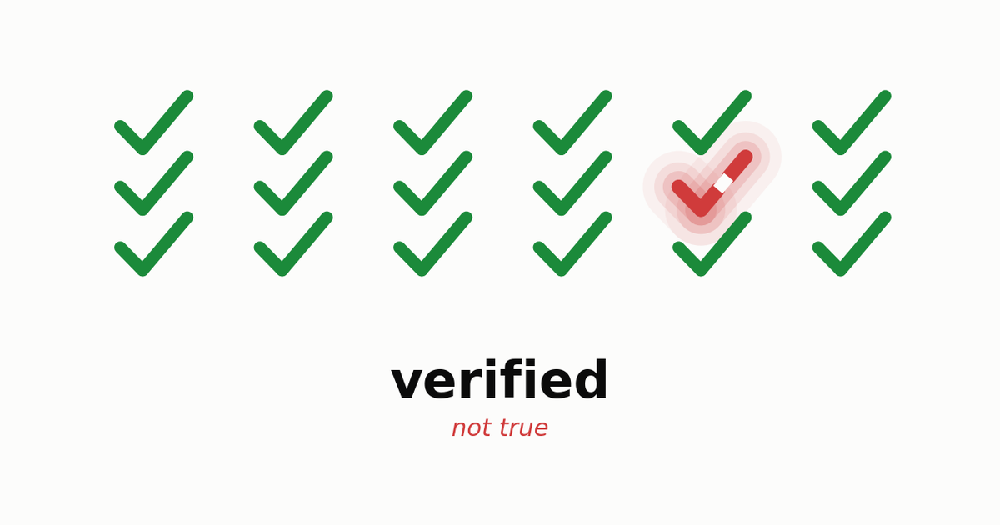
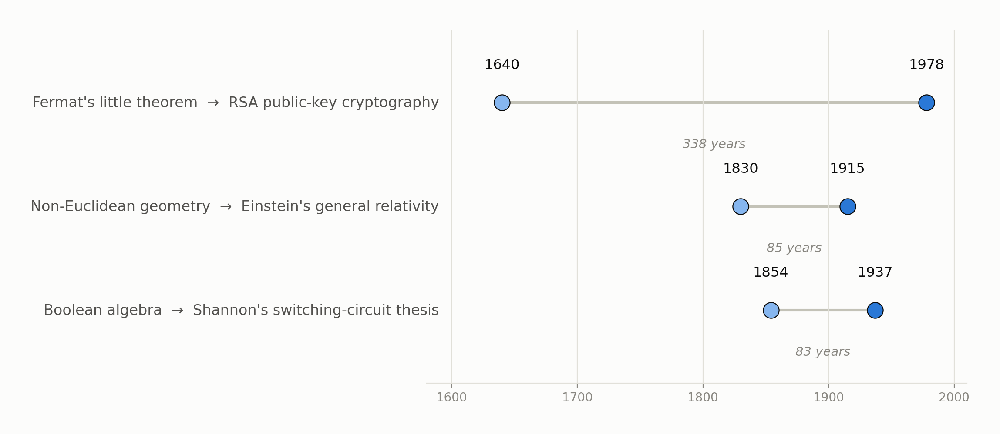
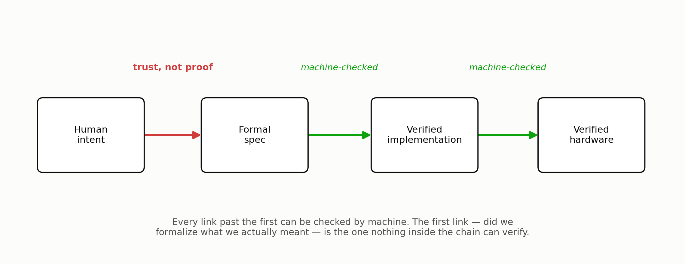
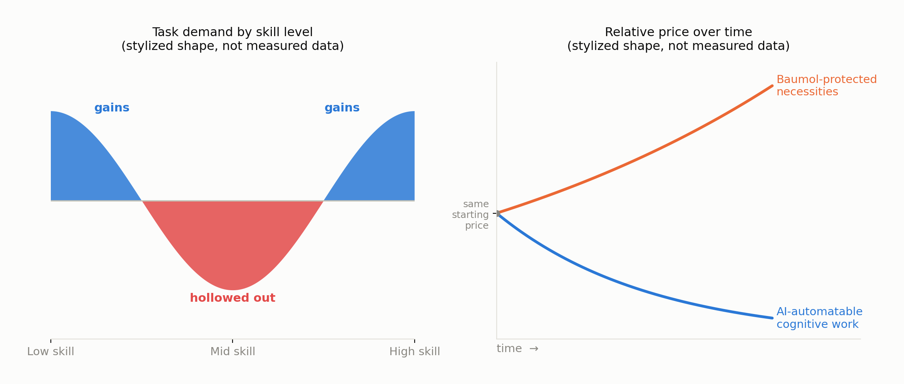

A proof used to be expensive. You’d spend an afternoon, a week, sometimes a career, and at the end you had a small number of sentences you could stand behind completely. That scarcity was itself informative — if someone had bothered to prove something, it probably mattered enough to justify the cost. Machines are removing that signal. A language model can now produce a working implementation, a full test suite, and increasingly a machine-checked proof of correctness, in the time it takes to read this sentence. Proof is becoming ambient. And ambient proof turns out to answer a much smaller question than we’ve been giving it credit for — which matters if you’ve spent the last few years reassuring yourself that the judgment calls are what’s safe and the grunt work is what’s disappearing. That reassurance is worth less than it sounds.
Two questions we used to answer with one word
Boehm wrote this before anyone trusted a compiler by default. It reads now like a prophecy about a much bigger kind of building.
Barry Boehm gave software engineering its cleanest vocabulary for this in 1979, and it has aged better than almost anything else from that decade (Boehm 1979): verification asks are we building the product right? Validation asks are we building the right product? For most of software’s history the two lived in one head. A programmer implicitly validated while verifying, because both were slow enough that a single person could hold the whole loop — spec to output — in mind at once. Not anymore. Verification, cheap and mechanical, now ships instantly. Validation still needs a mind that can hold the artifact next to the world and notice when the two have drifted apart. Everything below is really one argument, restated from a few angles: verification is being automated faster than anything else in software’s history; validation is not, and the reasons it isn’t are more interesting, and less comforting, than “not yet.”
Where the checking stops
Start with the obvious rebuttal: build a verifier for the verifiers. Prove the spec satisfies a meta-spec, prove the meta-spec satisfies a meta-meta-spec, and recurse until AI is checking AI checking AI, with no person needed anywhere in the loop. This works about as well as writing an interpreter in the language it interprets — an old and genuinely useful trick, and one that always needs a host system underneath, willing to just run without being asked to justify itself. Push the recursion as far as you like and you still land on something taken as given rather than derived — an axiom, a root spec, a foundational choice about what “correct” even means here.
Turtles all the way down, except eventually you run out of turtles and have to stand on something.
This isn’t just a practical shrug of a limitation. It rhymes with something Gödel actually proved, in 1931: a sufficiently expressive formal system can’t establish its own consistency using only its own resources (Gödel 1931).1 The analogy isn’t exact — a spec isn’t an axiomatic system, and “was this the right thing to build” isn’t the same question as “is this system consistent.” But the shape carries over. Nothing inside a verification stack, however many layers deep, can certify that its own foundation was the right one to have picked. Somebody, or something, outside the stack has to decide the axiom is good, and the only court that ever rules on that is how the world responds afterward — which hasn’t happened yet, and so can’t be checked in advance by anyone, of any kind.
The uselessness that wasn’t
Here’s a reason not to grieve this too quickly. In 1940, G. H. Hardy wrote an entire book in praise of mathematics that would never be useful, and he named number theory — his own field — as the clean case of it. His actual line: “No one has yet discovered any warlike purpose to be served by the theory of numbers or relativity, and it seems very unlikely that anyone will do so for many years” (Hardy 1940). Thirty-eight years later, RSA was built from the very number theory he was pointing at — modular exponentiation, and the difficulty of factoring, resting on a pattern Fermat had noted in a 1640 letter and Euler generalized in 17632 (Rivest et al. 1978). It’s still, in one form or another, why your browser is willing to trust your bank. Hardy wasn’t wrong about war. He just hadn’t thought of banking, and the lag was longer than his own career. George Boole worked out a two-valued algebra for logic in 1854 with no application in mind at all. Claude Shannon’s 1937 master’s thesis showed it could design a switching circuit, and that thesis is arguably the founding document of every digital computer built since (Shannon 1938). Non-Euclidean geometry sat as an elegant curiosity for the better part of a century before Einstein needed its machinery to write down general relativity.
Abraham Flexner made the argument explicit in 1939: research aimed at application is usually worse at producing application than research aimed at nothing but the truth of the matter (Flexner 1939). Utility, it turns out, isn’t a target you can aim at directly — it behaves more like a shadow some structures cast later, unpredictably, and rarely onto the person who built them. Which means confident claims that a given line of thought “will never matter” are exactly the wrong kind of claim to make with confidence. The honest epistemic state is closer to: we can’t know, and betting heavily against it has an unusually bad track record.

When the badge is cheap, faking the badge is cheaper
Cheap verification creates a second problem that has nothing to do with logic. When a trust signal is expensive to produce, it is usually honest, because faking it costs about as much as earning it. When it becomes cheap, faking it gets cheaper than earning it — and George Akerlof gave this collapse a name in 1970, “the market for lemons”: once buyers can’t distinguish a good product from a bad one, and sellers know it, the market fills with bad ones and the good ones exit (Akerlof 1970). Mortgage-backed securities carried AAA ratings right up until 2008, because the agencies rating them were paid by the people issuing them, and the rating had quietly stopped tracking the risk it claimed to measure.3
“Formally verified” is well on its way to becoming that kind of badge — for software, for AI-generated specs, eventually for hardware. A verification chain is only as honest as every party who fed something into it, and an actor with an interest in a backdoor, or a vendor with an interest in shipping fast, doesn’t need to break the proof. They just need the proof to be checking the wrong artifact, quietly, with no one’s incentive aligned to notice. The historical versions of this failure — the ratings agencies, audited books that weren’t, safety certifications issued without the safety — tend to get fixed the same way: not with more verification, but with someone whose job is to distrust the verification and go check by hand. That job doesn’t shrink as verification gets cheaper; if anything it gets scarcer and more necessary, precisely because fewer people are trained to do it once the badge starts looking sufficient on its own.

The mind that used to be safe
Distrusting the badge and checking by hand is itself a judgment call, which raises the obvious next question: is that kind of judgment actually safe from all this, or just safe so far? For decades, the safest job in an automating economy was tacit judgment, precisely because it resisted being written down. Michael Polanyi named this in 1966 — “we can know more than we can tell” — and the observation quietly protected an entire tier of skilled and professional work: if you couldn’t articulate the rule, a machine couldn’t be handed the rule, so the work stayed safe by default (Polanyi 1966). Hans Moravec noticed the mirror-image fact from the robotics side: the reasoning that looks hard to us — chess, arithmetic, formal proof — turns out to be cheap for a machine, while the sensorimotor competence a toddler gets for free, grasping an odd-shaped object, walking on gravel, is punishingly difficult to engineer (Moravec 1988). Between those two observations sat a comfortable assumption: cognition-heavy judgment is safe because it’s tacit, physical work is safe because it’s embodied, and machines would eat only the codified middle.
Large language models are the technology that has disturbed that assumption the most, and the most broadly, because they’re unusually good at the tacit, pattern-soaked reasoning Polanyi’s paradox was supposed to protect. It isn’t even the first dent: recognizing a face was Polanyi’s own textbook example of something we know without being able to say how, and convolutional networks got good at that a decade before anyone had heard of a transformer. What’s different now is the range — not one narrow perceptual skill, but judgment itself, at the width of ordinary language. Whether the same thing happens to Moravec’s other flank, physical competence, is a live and separate question, and serious people are betting the model side of that gap closes soon: the recent push toward world models trained on video and self-supervised prediction — the kind of program researchers like Yann LeCun have argued is necessary beyond language alone — is aimed at just that. But understanding physics inside a model and operating reliably in someone’s actual kitchen are different problems, and the distance between them has historically been paid for in capital, certification, and years, not cleverness.4 A mind can get the physics right and still need a decade to get the body cheap, certified, and trusted. That decade is real, even if it isn’t forever.
Bifurcation, and its limits
The standard economic story about automation is bifurcation, not elimination. David Autor’s account of labor-market polarization is the clean version: automation hollows out routine work in the middle of the skill distribution while increasing demand at both ends — low-skill work that resists codification, and high-skill work built around exception-handling and accountability (Autor 2015; Autor et al. 2003). ATMs didn’t remove bank employees; they removed routine transactions and pushed the remaining humans toward advisory work. Autopilot didn’t remove pilots; it removed routine flying and left them the accountable party for the moments autopilot can’t parse. If that pattern holds, the base layer of writing and checking software commoditizes hard, and a smaller, better-paid tier persists around auditing the auditors and holding liability when a “verified” system fails anyway.
A string quartet takes the same number of musician-hours to perform today as it did in Mozart’s time — no productivity gain, ever — while a recording of that same quartet costs almost nothing to reproduce. That gap, not any change in the quartet, is the whole mechanism.
There’s a companion mechanism that pushes the scarce tier’s price up even as its size shrinks: William Baumol’s cost disease, first diagnosed in the performing arts in 1966 (Baumol and Bowen 1966). Sectors that resist productivity gains get relatively more expensive over time, not because they improve, but because everything around them gets cheaper. If judgment resists automation while implementation gets nearly free, judgment’s relative price should rise — a small number of people doing it very well could be paid handsomely for a service that took a village a generation ago.
But cost disease is not a friendly force, and it runs the other way through the very sectors a displaced worker actually needs. Housing is constrained by land and zoning, not labor. Healthcare is constrained by licensing and physical presence. Both resist the price collapse AI brings to everything automatable, and Baumol’s logic says they get relatively more expensive just as automatable prices fall around them. The uncomfortable version of the forecast isn’t “engineers get replaced by cheaper engineers.” It’s nominal wages falling across a wide swath of newly automatable work while rent, healthcare, and food hold their price or rise — because cost disease does not check whether the patient can afford the treatment.

The spiral, and whether it’s inescapable
The same essay predicted a 15-hour work week by about now, on the logic that productivity gains this large would simply be shared out as leisure (Keynes 1930). He was right about the productivity. He didn’t guess who’d end up keeping the difference.
John Maynard Keynes coined “technological unemployment” in 1930 and called it a temporary phase of maladjustment — workers displaced faster than new work could be invented for them, but only for a while (Keynes 1930). The standard rebuttal to automation panic has leaned on that word, temporary, ever since: every past wave destroyed narrow, specific tasks and left people a comparative advantage at whatever job hadn’t been invented yet, because that job still needed general human cognition a machine didn’t have. Daniel Susskind’s case for why this time may not rhyme is worth taking seriously rather than waved off as alarmism (Susskind 2020): if the automation is general rather than narrow, it can fill new job categories nearly as fast as they’re invented, removing the very lag that made every prior transition survivable. Agriculture to manufacturing to services each took the better part of a century, long enough for a generation to retrain, relocate, and adjust its expectations. Compress that into a handful of years and the mechanisms that absorbed the shock before don’t get the time they need to operate, whether or not they’d eventually work in principle.
Mass displacement from cognitively automatable work pushing into physical labor, bidding those wages down too, cutting purchasing power and therefore demand, is a coherent mechanism, not a fringe worry — and the Baumol point above makes it sharper, not softer, since the squeeze concentrates on necessities rather than spreading evenly. What keeps it from being a certainty is that it isn’t purely a law of economics; it’s contingent on two things nobody can currently measure with confidence. One is the actual speed at which general capability closes the remaining gaps, cognitive and physical both. The other is whether the institutional machinery built for exactly this kind of shock — unemployment insurance, progressive taxation, the scale of discretionary intervention used in 2008 and 2020 — gets deployed fast and large enough, which is a question about political will under polarization, not about whether the tools exist.
There is one narrower, more durable mechanism worth naming on its own: liability doesn’t dissolve just because verification got cheap. Someone still has to be the named, accountable party when an AI-verified system fails in the world — a licensed engineer, a signing officer, an insurer pricing the risk — and that role gets compensated for bearing the accountability, almost independent of how much of the underlying thinking a machine actually did. It’s a thinner floor than a skilled profession used to stand on. But it’s a real one, and it’s the part of this whole picture I’d bet on holding.
What’s actually worth training
None of this resolves into “learn to code” or “learn to verify,” because both of those are the layer being eaten. What’s left is narrower and harder to market: the capacity to hold a formal artifact — a spec, a proof, a model, a badge — next to the reality it claims to represent, and notice the moment the two have quietly come apart. This was never going to be rewarded automatically, the way a licensed profession was rewarded across the twentieth century, whether or not you loved the work. It ran, always, on a small number of people who’d have trained themselves anyway, for the plain pleasure of getting the model right, market or no market underneath them. What’s changed isn’t whether that’s worth having. It’s how much is now riding on whether anyone still does.
A proof will always check out. Whether it was proving the right thing is the one question nothing currently being built can answer for you.
References
Footnotes
Strictly, this is Gödel’s second incompleteness theorem; the first, related but distinct, establishes that any such system contains true statements it cannot prove.↩︎
Fermat stated the underlying observation in a 1640 letter without a general proof; Euler supplied the generalization in 1763 that RSA’s correctness argument actually leans on. The seed insight is still Fermat’s.↩︎
The investors who saw the 2008 collapse coming and profited from it — Michael Burry’s trade being the most famous — made their money by refusing to trust the AAA badge and reading the underlying loan tapes themselves.↩︎
Public self-driving demonstrations go back roughly a decade; as of this writing, commercial robotaxi service is still geographically limited and closely regulated rather than available on ordinary roads everywhere. The lag has run through insurance law and long-tail edge cases, not through the driving-policy models.↩︎